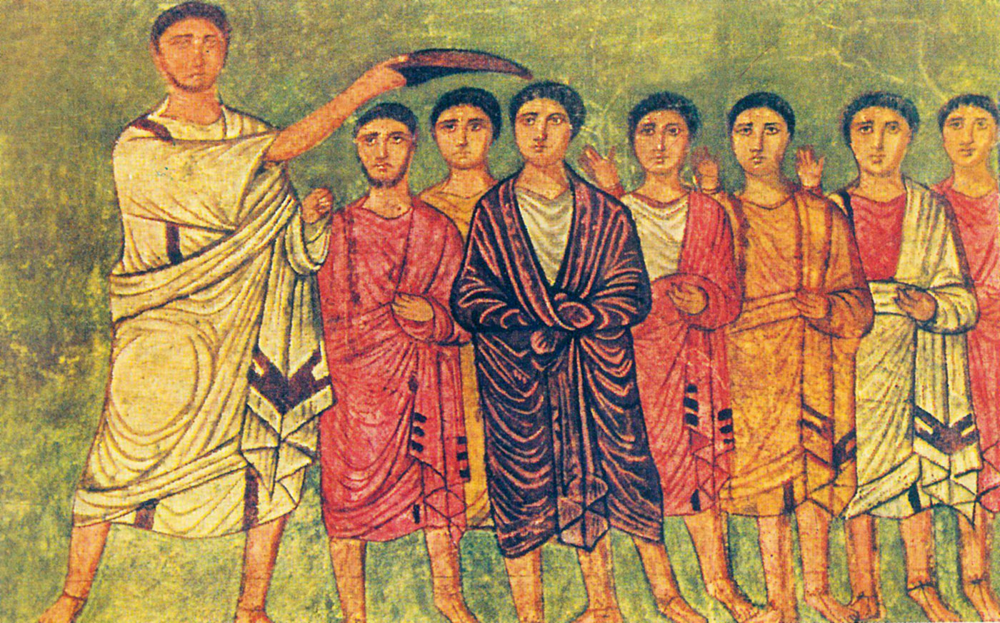
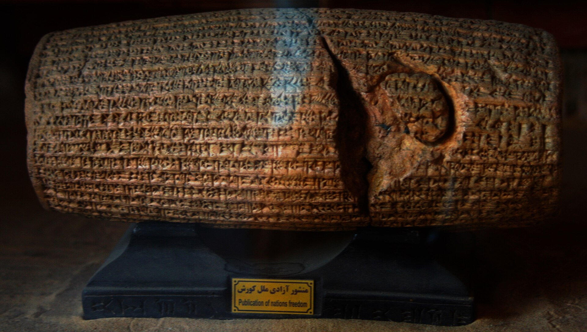
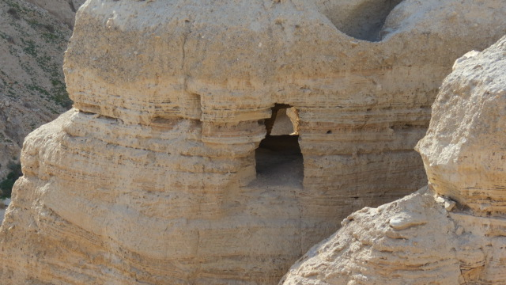

La palabra que traducimos por «Cristo» significa «untado con aceite», y en Éxodo 40 se aplica a la pila de bronce del santuario.
Esta serie se llama «Cómo Jesús se convirtió en Dios», y antes de escribir una línea conviene decir que ese título lleva algo escondido dentro.
Lleva una escalera. Un abajo, un arriba, y un recorrido entre los dos. La pregunta «¿cuándo se convirtió?» solo tiene sentido si existe una escala con un peldaño inferior —un hombre— y uno superior —un dios—, y si lo que hay que averiguar es en qué momento se pasó del uno al otro.
Esa escala existe: los manuales la llaman «cristología alta» y «cristología baja», y se usa en todas partes. Y es un eje niceno proyectado hacia atrás sobre textos que no funcionaban con él. Los autores del siglo I no se preguntaban cuánta divinidad tenía Jesús. Se preguntaban qué lugar ocupaba respecto del Dios de Israel, si se le daba culto, si era agente, mediador, sabiduría o imagen. Son preguntas distintas y no se ordenan en una escalera.
No vamos a cambiar el título, porque es el que describe la pregunta que trae el lector. Pero lo vamos a usar sabiendo lo que hace, igual que en la serie anterior dijimos que «El alma que no estaba» era el enunciado de una tesis y no la descripción de un hecho.
Y empezamos por el principio, que es una palabra.

מָשִׁיחַ, mashiaj, viene de una raíz que significa «untar». Gramaticalmente es un adjetivo verbal sustantivado, y se traduce sin misterio: el untado con aceite. En griego se vertió como χριστός, christós, que significa exactamente lo mismo — y de ahí «Cristo», que no es un apellido sino una traducción.
Lo que designa es un estatus ritual y político: alguien investido mediante una unción. No tiene, en el hebreo bíblico, ninguna connotación de sobrehumanidad, de preexistencia ni de divinidad. Y eso no es una opinión minoritaria: es consenso, y se puede comprobar recorriendo los usos.
Los reyes, en primer lugar. Samuel toma un frasco de aceite y lo derrama sobre la cabeza de Saúl; después hace lo mismo con David. De ahí sale la fórmula que se repetirá decenas de veces, meshiaj YHWH, «el ungido de YHWH».
Después los sumos sacerdotes: ha-kohen ha-mashiaj, «el sacerdote ungido», en el Levítico. Guárdese este dato, porque vuelve: cuando en Qumrán aparezcan dos mesías, uno de los dos será éste.
También los patriarcas, en el Salmo 105: «no toquéis a mis ungidos», en paralelismo con «no hagáis mal a mis profetas». Y un profeta, en 1 Reyes 19, donde Elías recibe el encargo de ungir a Eliseo.
Y entonces llega Éxodo 40, y ahí se acaba cualquier discusión sobre si el título dice algo de la persona ungida — porque no siempre hay persona. Se unge el tabernáculo. Se ungen sus utensilios. Se unge la pila de bronce con su base.
Un mueble puede ser ungido. Ungir es consagrar para una función.
Una sola pregunta, hecha a todo lo que en la Biblia hebrea recibe ese título, y después a lo que esperaban los judaísmos del Segundo Templo. Lo interesante de esta criba no es qué pasa el tamiz: es cuántas veces seguidas sale la misma respuesta. Pulsa cualquier fila.
Pero el versículo que zanja el asunto no es ninguno de ésos. Es Isaías 45,1.
כֹּה־אָמַר יְהוָה לִמְשִׁיחוֹ לְכוֹרֶשׁ אֲשֶׁר־הֶחֱזַקְתִּי בִימִינוֹ Isaías 45,1
«Así dice YHWH li-meshijó —a su ungido—, le-Koresh —a Ciro—, a quien he tomado de la diestra.» Y un versículo antes, en 44,28, lo llama «mi pastor».
Ciro II de Persia. Un rey extranjero, no israelita y no yahvista, llamado ungido de YHWH por un profeta de Israel. No se convirtió; no hay en el texto la menor sugerencia de que lo hiciera. Es el rey que permitió el regreso de los deportados, y por eso el profeta lo llama así.

De modo que el título designa comisión: a quién ha encargado Dios una tarea. No naturaleza. No linaje davídico. No piedad. Ni siquiera pertenencia al pueblo.
Hay un segundo dato en la misma dirección y es más incómodo todavía, porque ocurre dentro de Israel. En 1 Samuel 24 y 26, David se niega dos veces a matar a Saúl teniéndolo a su merced, y la razón que da es que Saúl es «el ungido de YHWH». Pero en ese punto del relato Dios ya ha rechazado a Saúl. El título sobrevive al favor divino. Es un cargo, no un certificado de virtud.
Lo que sí se discute, y conviene decirlo, es el alcance del pasaje de Ciro. Lisbeth Fried reseñó tres posiciones: que los pasajes sobre Ciro sean adiciones posteriores; que «ungido» sea ahí solo una comisión regia sin carga mesiánica; o —la más interesante— que Ciro sea central a la teología del libro de Isaías, y que su unción marque precisamente el final de la monarquía davídica: Dios haciendo por medio de un persa lo que antes hacía por medio de David.
Cuando se dice que los judíos del siglo I «esperaban un mesías», se está diciendo algo que la investigación de las últimas décadas ha desmontado con cuidado. No había una expectativa: había varias, y buena parte de la literatura judía del período apenas se interesa por ningún mesías. En la literatura sapiencial casi no aparece. En Filón, tampoco.
Quien ha reorientado el campo es Matthew Novenson, y su argumento es de método: no existió «la idea mesiánica» judía, un concepto unitario y estable que los textos «expresarían». Organizar el estudio alrededor de ese constructo, dice, es organizarlo alrededor de un concepto artificial en vez de alrededor de un corpus de textos.
Lo que sí había era un idioma político compartido, con hablantes muy distintos. Y unos cuantos mesías reales: Novenson distingue entre los «advenedizos» y los «de sangre azul», y en la lista caben Zorobabel, los asmoneos, Herodes, Jesús y Simón bar Kosiba.

En Qumrán no esperaban un mesías: esperaban dos. La Regla de la Comunidad dice que se vivirá bajo aquellas normas «hasta que venga el profeta y los mesías de Aarón e Israel», en plural: uno sacerdotal y otro real. Y en la Regla de la Congregación el orden está claro — el sacerdote bendice antes que «el mesías de Israel».
En los Salmos de Salomón 17, de mediados del siglo I antes de nuestra era, se pide a Dios que suscite «a su rey, hijo de David» para purgar Jerusalén. Es un rey humano: sin pecado, enseñado por Dios, y que no confía en caballo ni en jinete ni en arco. Y el texto se cuida de dejar claro quién manda de verdad: «el Señor mismo es su rey».
Y en 4 Esdras, hacia el año 100, hay un mesías que se muere. «Será revelado mi hijo el Mesías» con los que están con él; y pasado un tiempo, «morirá mi hijo el Mesías», y todo vuelve al silencio primordial antes de la resurrección general. Un dato de paso que dice mucho sobre la transmisión de estos textos: el manuscrito latino pone ahí «mi hijo Jesús», y es una glosa cristiana — las versiones siríaca, etíope, árabe y armenia no la traen.
El tabernáculo, el altar, los utensilios y la pila de bronce con su base. Ungir es consagrar para una función, y la función puede ser la de un mueble.
David no mata a Saúl porque es «el ungido de YHWH» — y Dios ya lo ha rechazado. El título sobrevive al favor divino.
A un rey persa que no adoraba a YHWH. No hay linaje, no hay piedad, no hay siquiera pertenencia al pueblo. Hay encargo.
Dos. «Hasta que venga el profeta y los mesías de Aarón e Israel»: uno sacerdotal y otro real — y en la Regla de la Congregación el sacerdote va primero.
Que se moría. «Morirá mi hijo el Mesías», y todo vuelve al silencio primordial antes de la resurrección general.
Y ahora la parte que separa esto de la divulgación, porque hay una conclusión fácil a mano y es falsa.
La conclusión fácil sería: «mesías no significaba Dios, luego llamar mesías a Jesús no implicaba nada sobre su divinidad, luego la divinidad se añadió después». Los dos primeros pasos son correctos. El tercero no se sigue.
Porque el argumento de quienes sostienen que hubo una cristología alta muy temprana no es «lo llamaron mesías, luego lo creían divino». Nadie defiende eso. Lo que sostienen —Larry Hurtado, Richard Bauckham y otros— es que otras cosas exceden lo que el título mesiánico permitía: que se le diera culto junto al Dios de Israel de forma asombrosamente precoz; que se le aplicaran textos del Antiguo Testamento que hablaban de YHWH; y que un himno que Pablo cita —y probablemente no compone— le aplique a Jesús un pasaje de Isaías 45, el mismo capítulo del que sale el versículo de Ciro, y que es uno de los textos más radicalmente monoteístas de la Biblia hebrea.
Quien refuta «mesías ≠ Dios» ha refutado algo que nadie defiende. El debate real está en otro sitio, y es el de la entrega siguiente.
De casi todos los que perdieron estas discusiones no se conserva prácticamente nada escrito por ellos. De Arrio sobreviven unos pocos fragmentos, y los cita Atanasio para refutarlos. De Pablo de Samosata, de Noeto, de Práxeas y de Sabelio, casi nada directo. Y de los ebionitas, nada en absoluto: el llamado Evangelio de los Ebionitas existe únicamente como siete citas dentro de la obra que los refuta.
Que las fuentes vengan de los vencedores no las invalida — son las que hay, y con ellas se trabaja. Pero obliga a distinguir en cada caso entre lo que un autor dice de sí mismo y lo que su adversario dice de él. Esta serie lo hará caso por caso, y en la tercera entrega hay una pieza que lo pone en forma de medida.
Lo que es consenso en esta entrega: que mashiaj es un adjetivo verbal sustantivado sin connotación de divinidad; que se aplica a reyes, sumos sacerdotes, patriarcas, un profeta y objetos del santuario; que Isaías 45,1 llama mashiaj a Ciro; y que no existió una única expectativa mesiánica judía. Las referencias están verificadas una a una contra el texto masorético.
Lo que está en debate abierto: el alcance del pasaje de Ciro, con las tres lecturas que reseña Lisbeth Fried; el referente de 4Q246, que unos leen como figura mesiánica positiva y otros como un usurpador del tipo de Antíoco IV; y sobre todo la datación de las Similitudes de Henoc, que no aparecen entre los manuscritos de Qumrán y que, si resultan contemporáneas de Jesús o algo posteriores, dejan de servir para decir «esto ya estaba antes».
Y una cautela sobre el propio marco de la serie, que es la que abre esta entrega. Las categorías «cristología alta» y «cristología baja» son cómodas y las vamos a usar, pero son un eje niceno aplicado a textos anteriores a Nicea. La crítica a ese eje lleva años creciendo en la investigación y hoy está cerca de ser consenso. Lo decimos aquí, en la primera entrega, para no tener que descubrirlo en la última.
Y lo que esta serie no hace: decidir si Jesús es Dios. Describe cómo se formaron unas definiciones, con qué materiales y en qué fechas. Que una doctrina tenga una formación histórica documentable no dice nada sobre si es verdadera, y confundir las dos cosas tiene nombre propio. Lo daremos con ese nombre en la séptima entrega, y valdrá en las dos direcciones.
Queda dicho lo que la palabra no significaba. La entrega II se ocupa de lo que ocurre cuando se ordenan por fecha los textos que hablan de Jesús — y de por qué la pendiente ordenada que todo el mundo ha visto alguna vez en un manual se rompe con una sola fecha.
Texto hebreo cotejado contra la edición Miqra according to the Masorah. Los usos de mashiaj en la Biblia hebrea están listados y verificados uno a uno.
Matthew V. Novenson, Christ among the Messiahs: Christ Language in Paul and Messiah Language in Ancient Judaism, Oxford University Press, 2012, y The Grammar of Messianism: An Ancient Jewish Political Idiom and Its Users, Oxford University Press, 2017 · Lisbeth S. Fried, «Cyrus the Messiah? The Historical Background to Isaiah 45:1», Harvard Theological Review 95/4 (2002) 373-393.
Segundo Templo. 1QS (Regla de la Comunidad) IX,11 y 1QSa (Regla de la Congregación) II,11-22 · 4Q521 · 4Q246 · 4Q174 (Florilegio) · Salmos de Salomón 17, en la edición de R. B. Wright · 4 Esdras 7,28-29, con la edición de Michael E. Stone, Fourth Ezra, Hermeneia, Fortress, 1990 · 1 Henoc 37-71, las Similitudes, con la discusión de datación recogida por George W. E. Nickelsburg.
Sobre el debate que abre la entrega siguiente. Larry W. Hurtado, Lord Jesus Christ: Devotion to Jesus in Earliest Christianity, Eerdmans, 2003 · Richard Bauckham, Jesus and the God of Israel, Eerdmans, 2008 · James D. G. Dunn, Christology in the Making, 2.ª ed., 1989 · Bart D. Ehrman, How Jesus Became God, HarperOne, 2014.